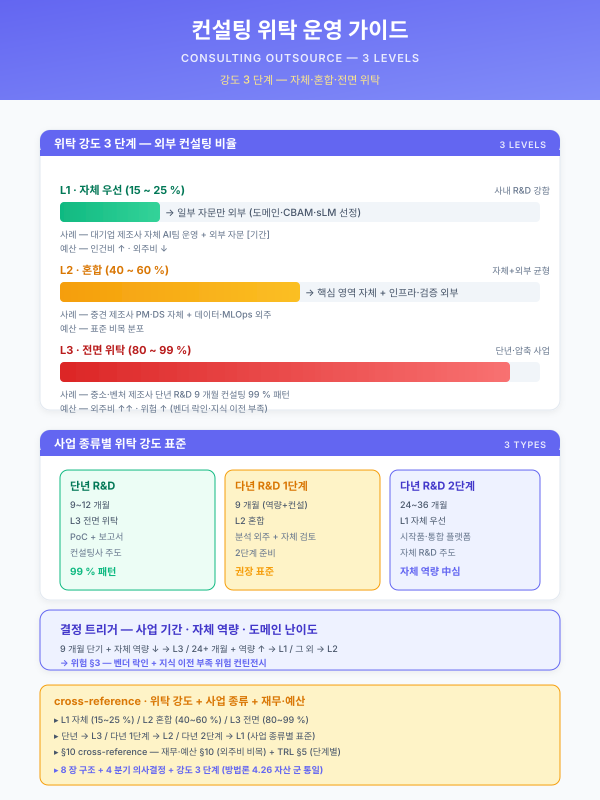

가이드 — 컨설팅 위탁 운영 (다년 R&D 1단계 표준)¤
📖 약 16 분 읽기

ℹ️ 페이지 정보 (워크스페이스 메타)
자체평가 갭 #6 해소. 다년 R&D 양식의 1단계 (9 개월·역량 분석 + 컨설팅) 는 외부 컨설팅 위탁이 본체이며 정부지원의 ~99 % 가 컨설팅비로 집행되는 다년 R&D 특수 패턴이 본 자산의 표준화 대상. 운영 가이드 군의 9 번째 멤버 (other/synergy-roi.md · guide/duration-compress.md · 재무_예산_산정_가이드.md · guide/korean-slm.md · guide/kpi-measurement.md · guide/external-validation.md · guide/rag-infra.md · guide/domain-knowledge.md 에 이은 자산). 4.26 자산 군 포맷 통일 — 8 장 구조 (개요 → 정의 → 의사결정 분기 → 강도 3 단계 → 실행 절차 → 사례 → 결합 → 적용 양식) 적용.
플레이스홀더 범례 —
[고객사]고객사명,[수치]수치,[%]비율,[기간]기간,[기관]컨설팅·자문 기관명,[임계]임계값,[법령-2026]시행 시점에 따라 교체가 필요한 법령·고시 태그. (확인 필요) 항목은 §7·§8 본문에서 명시 — 컨설팅사 단가·인·일·산출물 표준은 분기·기관 변동 영역이므로 본문에서 확정하지 않는다.본 가이드의 직접 근거 —
양식검증_DX촉진_R&D.md§7 갭 #6 (다년 R&D 1단계 컨설팅 위탁 표준 부재) · 갭 #13 (컨설팅 위탁 용역 내역서 표준);pkg/pkg1-steel-enterprise.md§5.3 (1단계 컨설팅 본체) · §6.2.1 (1단계 컨설팅 99 % 패턴) · §6.3 용역 내역서 1단계 행 (EY한영급 89,815 천원 / 9 개월 / DX 환경분석·추진전략) — 본 가이드의 1 차 적용 사례;other/raci-matrix.md§추진체계도;guide/kpi-measurement.md§4 Pre·In·Post 절차 골격;guide/external-validation.md§4 검증 절차.
1. 가이드 개요¤
본 가이드는 다년 R&D 1단계 (9 개월·역량 분석 + 추진 전략) 의 외부 컨설팅 위탁 운영 표준을 결집한다. 단년 R&D (12 개월 표준) 는 사내 인력·단일 위탁기관 중심의 5 비목 균형 분포가 표준이나, 다년 R&D 양식 (전사적 DX 촉진·글로벌 협력·산학협력 R&D 등) 은 1단계의 정부지원금 ~99 % 가 외부 컨설팅비로 집행되는 본체 패턴을 강제한다. 본 가이드는 이 본체 패턴을 표준화하여, 단년 자산만으로는 1단계 본문·예산 표·용역 내역서가 작성 불가한 갭 (양식검증_DX촉진_R&D.md §7 갭 #6·#13) 을 해소한다.
본 가이드는 운영 가이드 군 9 번째 자산으로서, 선행 자산의 8 장 포맷 통일 (4.26 표준) 을 준용한다. 본 가이드의 위치는 다음과 같다.
- 위탁·외부 자원 운영 트랙:
other/raci-matrix.md(§추진체계도·위탁 분산) →guide/external-validation.md(외부 검증 주체 7 종) → 본 가이드 (1단계 컨설팅 본체) 의 3 자산이 외부 자원 결합의 표준 트랙을 구성. - 다년 R&D 트랙:
guide/kpi-measurement.md의 단년 KPI 표준에 다년 차원 (단계별 측정·중간 점검) 보강 필요 영역과,재무_예산_산정_가이드.md의 단년 5 비목에 다년 단계별 분배 추가 영역과 직접 결합. - 1차 적용 사례:
pkg/pkg1-steel-enterprise.md의 1단계 9 개월 EY한영급 컨설팅 89,815 천원 본문이 본 가이드의 1 차 본문 시연이며, 본 가이드 §6 사례 단락이 그 본문을 자산 군 표준 양식으로 재정렬한 결과.
[출처:
양식검증_DX촉진_R&D.md§7 갭 #6·#13;pkg/pkg1-steel-enterprise.md§5.3·§6.2.1·§6.3; 운영 가이드 군 8 자산 포맷 통일 (4.26)]
2. 컨설팅 위탁의 정의 (단년 R&D vs 다년 R&D)¤
본 §2 는 단년 R&D 와 다년 R&D 의 외부 컨설팅 위탁 양식 차이를 4 행 비교 매트릭스로 정렬하고, 다년 R&D 1단계의 본체 패턴 (정부지원 ~99 % 컨설팅비 집행) 을 표준화한다. 본 매트릭스는 사업계획서 §5 (추진 계획) · §6 (예산 산정) · §6.3 (용역 내역서) 본문에 직접 인용 가능한 형태로 제시된다.
| 차원 | 단년 R&D (12 개월 표준) | 다년 R&D 1단계 (9 개월) | 다년 R&D 2단계 1·2년차 |
|---|---|---|---|
| 컨설팅 비중 | 5 비목 균형 분포의 일부 (위탁비 [%] 이내) | 정부지원금의 ~99 % (본체) | 다 위탁 분산 (사내 + 6 종 위탁) |
| 컨설팅 산출물 | 일부 자문 보고서·기술 자문 의견서 | DX 환경분석 + 추진전략 매트릭스 + BM + 로드맵 + 변화관리 (5 영역) | 단계별 위탁 결과 (인프라·알고리즘·시스템) |
| 컨설팅사 격 | 중소·전문 컨설팅 [기관] | 대형 컨설팅 펌 ([기관] EY한영·삼정KPMG·딜로이트·PwC 등) | 도메인 전문 SI·솔루션 기업 |
| 양식 강제 항목 | 5 비목 단일 표 | (i) 단계별 지원·부담계획 + (ii) 비목별 소요명세 + (iii) 용역 내역서 10 항목 | 위탁기관 별 분리 표 |
다년 R&D 1단계 본체 패턴: 1단계 9 개월의 정부지원금 91,016 천원 ↔ 외부 컨설팅비 89,815 천원 (98.7 %) 의 비율이 표준. 즉 [고객사] 의 1단계 책임은 (a) 컨설팅 결과 수령·검증 + (b) 자체 종합 보고서 작성 + © 2단계 진입 게이트 통과의 3 작업이며, 본문 작성·데이터 분석·시스템 구축은 컨설팅사 본체. 단년 R&D 의 5 비목 균형 분포 표준과는 본질적으로 다른 양식이므로,
재무_예산_산정_가이드.md의 단년 5 비목 양식을 1단계에 그대로 적용하면 양식 부정합 발생.[출처:
pkg/pkg1-steel-enterprise.md§6.2.1 (1단계 컨설팅 99 % 패턴) +양식검증_DX촉진_R&D.md§7 갭 #6 본문]
3. 4 분기 의사결정¤
본 가이드의 핵심 의사결정 도구는 컨설팅 위탁을 4 차원으로 직교 분기시키는 결정 매트릭스이다. 4 분기는 mutually exclusive 하게 설계되어 사업계획서 §5·§6·§II 2.3 본문에서 1 분기씩 단독 인용 가능하며, 동시에 4 분기를 모두 거치면 단일 컨설팅 위탁의 본체 결정 (자체 vs 위탁 / 컨설팅사 / 범위 / 검증) 이 완성된다.
3.1 컨설팅 vs 자체 분기¤
사업의 양식·고객사 사내 역량·정부지원 단계 구조에 따라 컨설팅 위탁 여부 결정.
- 자체 수행 (단년 R&D 일반·고객사 사내 DX 조직 보유) — 정부지원 5 비목 균형 분포 + 사내 인건비 중심. 단년 R&D 표준 양식.
- 일부 컨설팅 (단년 R&D 일부 + 디지털 경남·스마트공장) — 사내 + 외부 자문 [%] 결합. 위탁비 비목 일부 활용.
- 본체 컨설팅 (다년 R&D 1단계 + 전사적 DX 촉진·글로벌 협력·산학협력) — 정부지원 ~99 % 컨설팅비 집행. 양식 강제 영역으로 자체 수행 대안 부재. 본 가이드의 핵심 적용 영역.
3.2 컨설팅사 선정 기준 분기¤
컨설팅사 격·전문성·실적·사내 신뢰의 4 축 결합으로 선정.
- 대형 컨설팅 펌 ([기관] EY한영·삼정KPMG·딜로이트·PwC·Accenture 등) — DX 환경분석·추진전략·BM·로드맵·변화관리의 5 영역 풀 커버. 정부지원 사업 실적 풍부. 단가 高 (인·일 [수치] 만원). 다년 R&D 1단계 본체 패턴의 표준.
- 중견 전문 컨설팅 (제조 DX 특화·산업 도메인 특화 [기관]) — 일부 영역 (예: 변화관리 · BM 한정) 전문. 단가 中. 다년 R&D 1단계 + 단년 R&D 일부 결합 영역.
- 사내 + 산학 결합 (대학 산학협력단·연구소) — R&D 영역 (TRL 설계·기술 검증) 강함. 컨설팅 영역 (BM·변화관리) 약함. 산학협력 R&D 양식의 1단계 결합 패턴.
3.3 컨설팅 범위 분기 (5 영역)¤
다년 R&D 양식이 강제하는 컨설팅 5 영역의 결합 양식.
- DX 환경분석 (내부·외부·역량) — [고객사] 사내 디지털 역량 진단 + 외부 (시장·경쟁사·규제 [법령-2026]) 분석 + 인적·물적·금전적·지적 자산 진단. 1단계 컨설팅의 1 차 산출물.
- DX 추진전략 매트릭스 — BM · 추진과제 · 로드맵 · 변화관리의 4 차원 매트릭스. 양식 §1.6) 의 강제 표 형식. 1단계 컨설팅의 핵심 산출물.
- 변화된 BM 청사진 — 기존 BM 분석 + 변화된 BM 3 종 (디지털 전환 후 신규 시장·신규 고객·신규 가치) 의 본문 + 표.
- 추진과제 + 로드맵 — 다년 (3·5 년) 단계별 추진과제 + 로드맵 + 마일스톤. 2단계 1·2년차 추진 계획의 직접 입력.
- 변화관리 — 조직·인력·프로세스·문화 4 차원의 변화 관리 계획. 사업 종료 후 [고객사] 의 사내 정착 1 차 방어선.
3.4 컨설팅 결과물 검증 분기¤
컨설팅 산출물의 [고객사] 사내 정합성·다음 단계 입력 적합성을 검증.
- 자체 검증 ([고객사] 사내 DX 추진단·운영위) — 1단계 종료 시점 1~3 주 전 컨설팅 보고서 1식의 사내 검토 + 추가 작업 청구 (계약서 추가 작업 조항).
- 외부 자문 (학계·산업계 전문가 [수치] 인) — 1단계 종료 시점 1 회 외부 자문 회의체.
guide/external-validation.md§4 의 In 단계와 정합. - 2단계 진입 게이트 (정부지원 전문기관 평가) — 1단계 자체평가 보고서 + 컨설팅 보고서 1식 + 2단계 추진 계획서의 3 자료 제출 → 2단계 진입 결정.
4 분기 직교성 자기평가 — 3.1 (수행 주체) 은 결정 차원, 3.2 (컨설팅사) 는 공급자 차원, 3.3 (범위) 는 산출물 차원, 3.4 (검증) 는 품질 차원으로 차원이 분리되어 mutually exclusive 한 결정축. 각 분기는 단독 인용 가능하며, 4 분기를 직렬로 거치면 단일 컨설팅 위탁의 본체 결정이 완성된다.
4. 강도 3 단계¤
본 가이드의 인용 강도 3 단계는 사업 양식 (단년·다년) · 컨설팅 본체 패턴 적용 여부에 따라 분기된다. 본 강도 양식은 guide/korean-slm.md §6 · guide/kpi-measurement.md §5 · guide/rag-infra.md §5 의 강도 3 단계 양식과 정합하여 운영 가이드 군 전반의 인용 톤을 통일한다.
| 강도 | 분량 | 구성 | 적합 사업 |
|---|---|---|---|
| 강도 1 (낮음 — 일부 컨설팅) | 1 단락 + 위탁비 1 행 | §3.1 일부 컨설팅 분기 인용 + 위탁비 [수치] 천원 1 행 | 단년 R&D · 디지털 경남 · 스마트공장 |
| 강도 2 (중간 — 표준 컨설팅) | 2 단락 + 표 2 개 | §2 비교 매트릭스 + §3.1·§3.2 본체 컨설팅 분기 + 컨설팅사 1~2 행 | 단년 R&D 일부 + 다년 R&D 2단계 위탁 분산의 일부 |
| 강도 3 (높음 — 본체 컨설팅 99 % 패턴) | 3 단락 + 표 3 개 + 절차 인용 | §2 풀 + §3 4 분기 풀 + §5 실행 절차 5 단계 + §6 사례 + §II 2.3 용역 내역서 10 항목 | 다년 R&D 1단계 (전사적 DX 촉진 · 글로벌 협력 · 산학협력) — 양식 강제 |
강도 3 (본체 컨설팅 99 % 패턴) 표준 단락 양식 — "본 사업의 1단계 (9 개월) 는 외부 컨설팅 위탁 (DX 환경분석 + DX 추진전략 매트릭스) 이 본체이며, 정부지원금 [수치] 천원의 ~99 % ([수치] 천원) 가 컨설팅비로 집행되는 다년 R&D 양식 표준 패턴 (
guide/consulting-outsource.md§2·§4) 을 따른다. [고객사] 의 1단계 책임은 컨설팅 결과 수령·검증·자체 종합 보고서 작성의 3 작업이며, 컨설팅사 ([기관]) 의 5 영역 산출물 (환경분석·추진전략·BM·로드맵·변화관리) 이 2단계 1·2년차 추진 계획의 직접 입력이 된다."강도 3 단계 명확성 자기평가 — 강도 1 (단년 일부) → 2 (단년·다년 일부) → 3 (다년 1단계 본체 99 %) 의 단계가 컨설팅 비중·양식 강제 여부의 2 차원이 동시 증가하며 모호 영역 없이 분리. 패키지 1 (다년 R&D 전사적 DX 촉진) 은 강도 3 적용 사례.
5. 실행 절차 5 단계 (RFP·선정·계약·수행·검증)¤
본 §5 는 1단계 9 개월의 외부 컨설팅 위탁의 실행 절차를 5 단계로 표준화한다. 본 절차는 guide/kpi-measurement.md §4 의 Pre·In·Post 골격을 컨설팅 위탁에 특화시킨 형태이며, 1단계 시작 1~2 개월 전부터 1단계 종료 시점까지의 11 개월 운영 리듬을 다룬다.
- 1단계 — RFP 작성·발송 (사업 시작 -2 ~ -1 개월). 컨설팅 5 영역 (환경분석·추진전략·BM·로드맵·변화관리) 의 산출물 명세 + 9 개월 일정 + 단가 한도 [수치] 천원 + 평가 기준 (실적·역량·단가 가중치) 의 4 항목을 RFP 에 명시. 양식 §II 2.3 용역 내역서의 10 항목 (용역명·의뢰기관·수행업체·기간·비용·목표·필요성·주요 내용·활용 계획·선정기준) 과 1:1 정합. 발송 대상은 §3.2 의 대형 컨설팅 펌 + 중견 전문 [수치] 사 (확인 필요).
- 2단계 — 컨설팅사 선정·계약 (사업 시작 -1 ~ 0 개월). 제안서 평가 (정량 + 정성 평가표) → 우선협상 대상 선정 → 협상 → 계약 체결. 계약서에는 (a) 5 영역 산출물 명세 + (b) 9 개월 마일스톤 + © 추가 작업 청구 조항 (1단계 종료 전 [고객사] 자체 검증에서 갭 발견 시) + (d) 비밀유지·IP 귀속 + (e) 검수 기준의 5 항목이 본체.
- 3단계 — 컨설팅 수행 (사업 시작 0 ~ +9 개월). §3.3 5 영역의 단계별 수행 — 1~3 개월 환경분석 → 4~6 개월 추진전략 + BM → 7~9 개월 로드맵 + 변화관리 + 보고서 종합. 월 1 회 정기 회의체 + 격주 1 회 실무 회의체 + 분기 1 회 운영위원회 보고.
other/raci-matrix.md§추진체계도 의 본부·운영자·EHS·SI 4 자 협업 구조 적용. - 4단계 — 결과물 검증 (사업 시작 +8 ~ +9 개월). §3.4 4 분기 (자체 검증 + 외부 자문 + 2단계 진입 게이트) 의 직렬 적용. 자체 검증에서 갭 발견 시 1단계 종료 1~2 주 전 추가 작업 청구. 외부 자문 회의체는 1단계 종료 1 주 전 1 회 (학계·산업계 전문가 [수치] 인).
- 5단계 — 1단계 종료·2단계 진입 (사업 시작 +9 개월). 1단계 자체평가 보고서 + 컨설팅 보고서 1식 + 2단계 추진 계획서의 3 자료를 정부지원 전문기관에 제출 → 2단계 진입 결정. 컨설팅사 잔금 정산 + IP 귀속 정리 + 2단계 1년차 위탁기관 (예: 동연에스엔티급) RFP 발송 (2단계 1년차 -2 개월).
6. 사례 — 동국산업 EY한영 89,815 천원 / 9 개월¤
본 §6 은 pkg/pkg1-steel-enterprise.md §5.3·§6.2.1·§6.3 의 1단계 컨설팅 본문을 본 가이드의 강도 3 양식으로 재정렬한 1 차 적용 사례이다. 본 사례는 다년 R&D 양식 (전사적 DX 촉진 R&D) 의 1단계 본체 컨설팅 패턴의 본문 시연이며, 양식 §1.6) (컨설팅 분야별 세부 요청사항) + §II 2.3 용역 내역서의 10 항목을 모두 채운 표준 사례이다.
| 항목 | 내용 |
|---|---|
| 용역명 | DX 환경분석 + DX 추진전략 매트릭스 컨설팅 |
| 의뢰기관 | [고객사 가설: 동국산업] |
| 수행업체 | EY한영급 (대형 컨설팅 펌) |
| 기간 | 2026.04 ~ 2026.12 (9 개월) |
| 비용 | 89,815 천원 (정부지원 91,016 천원의 98.7 %) |
| 목표 | DX 환경분석 (내부·외부·역량) + DX 추진전략 (BM·로드맵·변화관리) 의 5 영역 산출물 |
| 필요성 | 다년 R&D 양식 §1.6) 강제 + [고객사] 사내 DX 추진단 역량 보강 + 2단계 1·2년차 추진 계획의 객관적 입력 |
| 주요 내용 | 1~3 개월 환경분석 (내부·외부·역량 진단) → 4~6 개월 추진전략 매트릭스 + 변화된 BM 청사진 → 7~9 개월 로드맵 + 변화관리 + 보고서 종합 |
| 활용 계획 | 2단계 1·2년차 추진 계획의 입력 + 사업화 BM (니켈도금·CBAM 컨설팅·솔루션 판매·전사 DX 신시장) 4 BM 청사진의 입력 |
| 선정 기준 | 제조 DX 실적 [수치] 건 이상 + 철강 도메인 자문 실적 + 정부지원 R&D 사업 실적 + 단가 가중치 |
본 사례의 정부지원 91,016 천원 ↔ 컨설팅비 89,815 천원 (98.7 %) 의 비율이 본 가이드 §2 의 본체 패턴 표준값. 즉 본 사례는 본 가이드의 1 차 본문 시연이며, 동시에 본 가이드의 §2·§3·§4·§5 가 본 사례의 자산 군 표준 양식의 직접 일반화 결과.
[출처:
pkg/pkg1-steel-enterprise.md§6.2.1 + §6.3 1단계 행 +양식검증_DX촉진_R&D.md§7 갭 #6·#13]
7. 다른 가이드·자산 결합¤
본 가이드는 다음 자산과 직접 결합되며, 결합 지점·결합 효과를 명시하여 사업계획서 인용 시 자산 간 경로를 추적할 수 있도록 한다.
| 결합 자산 | 결합 지점 | 결합 효과 |
|---|---|---|
guide/kpi-measurement.md §4 Pre·In·Post |
본 가이드 §5 실행 절차 5 단계 | KPI 가이드 §4 골격을 컨설팅 위탁에 특화. 1단계 정성 산출물 검증 표준화 |
재무_예산_산정_가이드.md §3 단위 비용 + §5 비목 |
본 가이드 §2 비교 매트릭스 + §6 사례 비용 | 다년 R&D 1단계 99 % 컨설팅비 패턴이 단년 5 비목 표준의 다년 보강 입력 |
guide/external-validation.md §4 In 자료 소집 |
본 가이드 §3.4 외부 자문 + §5 4단계 검증 | 외부 자문 회의체 + 2단계 진입 게이트의 외부 검증 양식 정합 |
other/raci-matrix.md §추진체계도 |
본 가이드 §5 3단계 본부·운영자·EHS·SI 4 자 협업 | 컨설팅사 + [고객사] 4 자 협업 구조의 직접 적용 |
양식검증_DX촉진_R&D.md §7 갭 #6·#13 |
본 가이드 §1·§2 갭 정의 + §6 사례 | 본 가이드의 직접 갭 해소 자산 |
pkg/pkg1-steel-enterprise.md §5.3·§6.2.1·§6.3 |
본 가이드 §6 사례 직접 적용 | 본 가이드의 1 차 본문 시연 |
other/synergy-roi.md §6 사업화 BM |
본 가이드 §3.3 변화된 BM 청사진 | 컨설팅 산출물 BM 4 종 (사례: 니켈도금·CBAM·솔루션·신시장) 의 사업화 ROI 산출 입력 |
guide/domain-knowledge.md (G17) |
본 가이드 §3.3 변화관리 + §5 3단계 | 베테랑 인터뷰 5 단계의 (1)·(2)·(3) 단계가 1단계 컨설팅 보고서 1식의 부록으로 통합 |
guide/rag-infra.md §4.1 Pre |
본 가이드 §6 사례 + §3.3 추진전략 | 1단계 컨설팅 결과의 RAG 평가셋 초안 (도메인 골드셋 100 문항 5 군) 입력 |
guide/duration-compress.md §3 |
본 가이드 §4 강도 3 단계 | 9 개월 1단계 압축 운영의 가이드라인 |
자산 결합도 자기평가 — 본 가이드의 8 장이 10 개 자산과 명시적 결합 지점을 보유. 특히 패키지 1 (사례) · 양식검증 (갭 정의) · 책임 분담 매트릭스 (추진체계) 의 3 자산과는 결합 인용 필수 (단독 인용 불가) 영역. 본 가이드 단독으로는 컨설팅 위탁의 골격만 제공하며, 구체 적용은 10 자산 결합으로 완성.
8. 적용 가능 양식·(확인 필요) 항목¤
본 가이드의 본체 컨설팅 99 % 패턴 (강도 3) 이 적용 가능한 양식은 다음과 같다.
- 전사적 DX 촉진 기술개발 R&D — 본 가이드의 1 차 적용 양식 (
양식검증_DX촉진_R&D.md직접 결합). 1단계 9 개월 + 2단계 1·2년차의 3 단계 이중 구조. - 글로벌 협력 R&D — 다년 양식의 1단계 컨설팅 본체 패턴 추정 (확인 필요). 양식 강제 항목·단계 분리 구조 검증 필요.
- 산학협력 R&D — 1단계의 산학 + 컨설팅 결합 패턴. 본 가이드 §3.2 의 사내 + 산학 결합 분기 적용.
- 대중소상생 LG AI 트랙 일부 — 단년 양식이나 1단계 컨설팅 일부 결합 가능 영역 (강도 1~2).
- 스마트공장·디지털 경남 — 단년 양식의 일부 컨설팅 (강도 1) 적용.
(확인 필요) 항목 — 분기 1 회 갱신 권장:
- 컨설팅사 인·일 단가 (대형 펌·중견·산학) 의 분기 시장 단가.
- 다년 R&D 양식별 1단계 컨설팅 비중 표준 (~99 % 패턴이 양식별로 동일한지 검증).
- RFP 표준 양식·평가 기준 가중치 (정부지원 사업별 차이).
- 1단계 외부 자문 회의체 표준 인원·전문가 풀 (학계·산업계 [수치] 인의 분야별 구성).
- 2단계 진입 게이트 평가 기준·통과율 (정부지원 전문기관별 차이).
- 컨설팅 산출물 IP 귀속 표준 (의뢰기관·수행업체 간 분배 비율).
- 컨설팅사 변경 시 양식 강제 절차 (계약 해지·신규 RFP·재선정 일정).
- 글로벌 협력 R&D · 산학협력 R&D 양식의 1단계 컨설팅 강제 여부 검증.
본 가이드는 분기 1 회 갱신 (§8 (확인 필요) 검증) + 새 사업 적용 시 §4 강도 결정 + 새 사례 발생 시 §6 사례 단락 추가 의 3 단 운영 절차로 유지 관리한다. 본 운영 절차는
guide/korean-slm.md·guide/kpi-measurement.md·guide/external-validation.md·guide/rag-infra.md와 정합하며, 운영 가이드 군 9 자산 전반의 분기 갱신 리듬을 통일한다.
본 가이드는 프레임 이며, 구체 컨설팅사·단가·산출물 표준은 양식·고객사·시점별 변동. (확인 필요) 표기를 무시하고 인용 시 양식 부정합 + 정부지원 정산 위험. 본 가이드는 운영 가이드 군 9 번째 자산이며, 후속 자산 (예:
가이드_위험관리·가이드_TRL_단계관리등) 작성 시 본 가이드의 8 장 구조 (개요 → 정의 → 의사결정 분기 → 강도 3 단계 → 실행 절차 → 사례 → 결합 → 적용 양식) 를 표준 포맷으로 준용 (4.26 자산 군 포맷 통일).
📌 이 페이지 정보 (개발자용)
- 원본 파일:
가이드_컨설팅_위탁_운영.md - 자산 군: 📋 운영 가이드
- slug 경로:
guide/consulting-outsource.md - 워크스페이스 정책: 원본 .md 수정 0 — hooks 로만 시각 변환
- 자산 자족성 정상화: Phase E7 완료 (잔여 외부 갭 4)